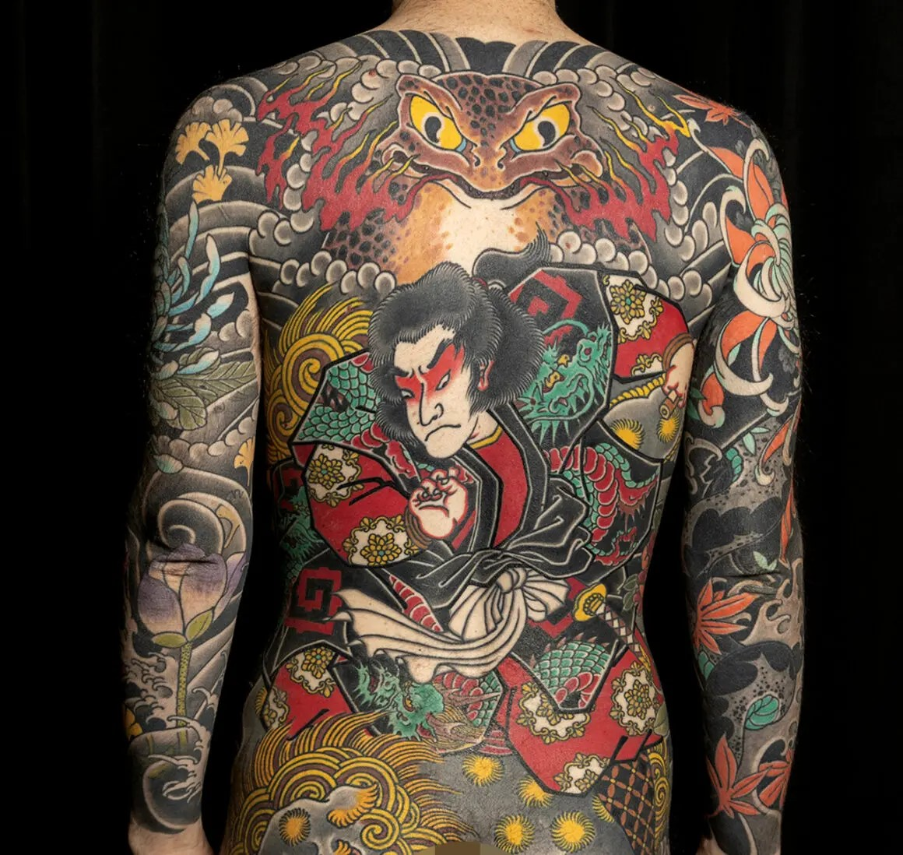
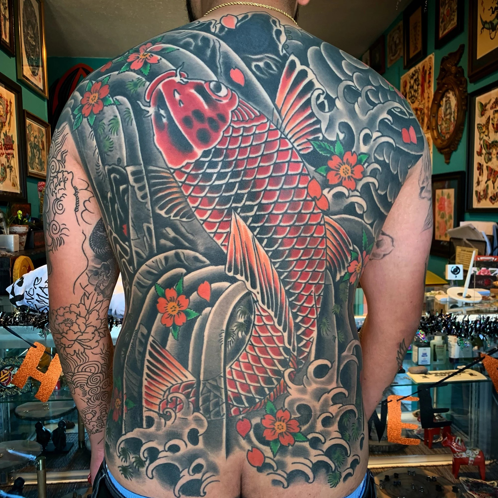
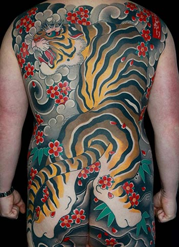
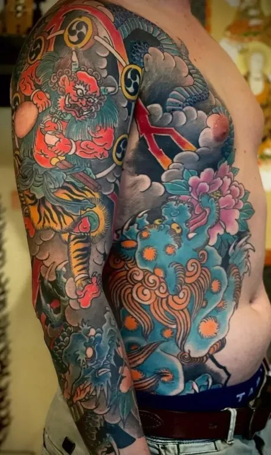
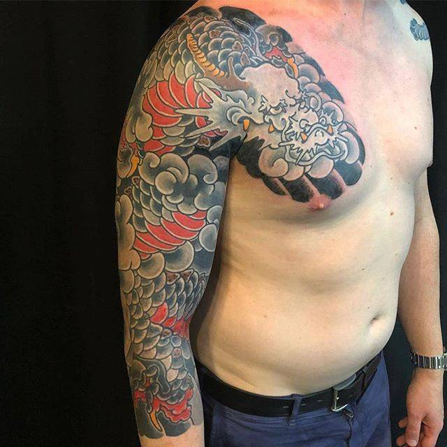

Types of Japanese Tattoos

Irezumi
Irezumi are traditional full-body tattoos with intricate designs. These tattoos often cover large portions of the body and are known for their detailed and elaborate artwork.


Horimono
Horimono is another term for traditional Japanese tattoos, often used interchangeably with Irezumi. These tattoos are also full-body and feature similar intricate designs.

Tebori
Tebori tattoos are hand-poked, created using traditional tools. This method is known for its precise and detailed results, and it requires a high level of skill from the tattoo artist.
